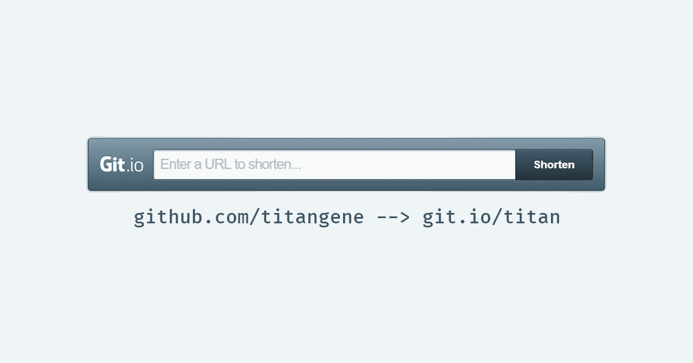
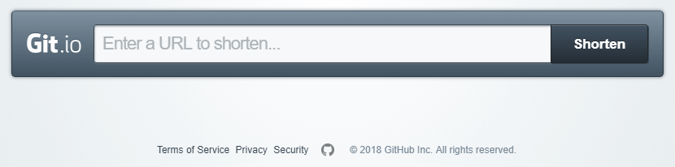

<!DOCTYPE html>
<html>
<head><meta name="generator" content="Hexo 3.8.0">
  <meta charset="utf-8">
  <meta http-equiv="X-UA-Compatible" content="IE=edge">
  
  <title>GitHub 縮網址服務 Git.io | Titangene Blog</title>
  <meta name="description" content="利用 blog 紀錄學習歷程">
  <meta name="keywords" content="">
  <meta name="HandheldFriendly" content="True">
  <meta name="apple-mobile-web-app-capable" content="yes">
  <link rel="shortcut icon" href="/favicon.ico">
  <link rel="alternate" href="/atom.xml" title="Titangene Blog">
  <meta name="viewport" content="width=device-width, initial-scale=1, maximum-scale=1">
  <meta name="description" content="最近發現原來 Github 也有提供縮網址 (URL Shortener) 服務「Git.io」，它只適用於 gist.github.com 及 github.com 兩個 hostname。">
<meta name="keywords" content="Github,URL,URL Shortener">
<meta property="og:type" content="article">
<meta property="og:title" content="GitHub 縮網址服務 Git.io">
<meta property="og:url" content="https://titangene.github.io/article/github-url-shortener.html">
<meta property="og:site_name" content="Titangene Blog">
<meta property="og:description" content="最近發現原來 Github 也有提供縮網址 (URL Shortener) 服務「Git.io」，它只適用於 gist.github.com 及 github.com 兩個 hostname。">
<meta property="og:locale" content="zh-tw">
<meta property="og:image" content="https://titangene.github.io/images/cover/github-url-shortener.png">
<meta property="og:image" content="https://titangene.github.io/images/github-url-shortener/github-url-shortener.png">
<meta property="og:updated_time" content="2018-11-22T08:46:18.166Z">
<meta name="twitter:card" content="summary">
<meta name="twitter:title" content="GitHub 縮網址服務 Git.io">
<meta name="twitter:description" content="最近發現原來 Github 也有提供縮網址 (URL Shortener) 服務「Git.io」，它只適用於 gist.github.com 及 github.com 兩個 hostname。">
<meta name="twitter:image" content="https://titangene.github.io/images/cover/github-url-shortener.png">

  <link href="https://fonts.googleapis.com/css?family=Inconsolata|Titillium+Web" rel="stylesheet">
  <link href="https://fonts.googleapis.com/css?family=Roboto+Mono" rel="stylesheet">
  <link href="https://cdnjs.cloudflare.com/ajax/libs/node-waves/0.7.5/waves.min.css" rel="stylesheet">
  <link rel="stylesheet" href="/style.css">
  <script>
    function setLoadingBarProgress(num) {
      document.getElementById('loading-bar').style.width=num+"%";
    }
  </script>
</head>
</html>
<body>
  <div id="loading-bar-wrapper">
  <div id="loading-bar"></div>
</div>


  <script>setLoadingBarProgress(20)</script>
  <header class="l_header">
	<div class="wrapper">
		<div class="nav-main container container--flex">
			<a class="logo flat-box" href="/">
				Titangene Blog
			</a>
			<div class="menu">
				<ul class="h-list">
					
						<li>
							<a class="flat-box nav-home" href="/">
								Home
							</a>
						</li>
					
						<li>
							<a class="flat-box nav-archives" href="/archives">
								Archives
							</a>
						</li>
					
				</ul>
				<div class="underline"></div>
			</div>
			
				<div class="m_search">
					<form name="searchform" class="form u-search-form">
						<input type="text" class="input u-search-input" placeholder="Search">
						<span class="icon icon-search"></span>
					</form>
				</div>
			
			<ul class="switcher h-list">
				
					<li class="s-search"><a href="javascript:void(0)"><span class="icon icon-search flat-box"></span></a></li>
				
				<li class="s-menu"><a href="javascript:void(0)"><span class="icon icon-menu flat-box"></span></a></li>
			</ul>
		</div>
		
		<div class="nav-sub container container--flex">
			<a class="logo" href="javascript:void(0)">
				Word of Forks
			</a>

			<ul class="switcher h-list">
				<li class="s-comment"><a href="javascript:void(0)"><span class="icon icon-chat_bubble_outline flat-box"></span></a></li>
				<li class="s-top"><a href="javascript:void(0)"><span class="icon icon-arrow_upward flat-box"></span></a></li>
				<li class="s-toc"><a href="javascript:void(0)"><span class="icon icon-format_list_numbered flat-box"></span></a></li>
			</ul>
		</div>
	</div>
</header>
<aside class="menu-phone">
	<nav>
		
			<a href="/" class="nav-home nav">
				Home
			</a>
		
			<a href="/archives" class="nav-archives nav">
				Archives
			</a>
		
	</nav>
</aside>

    <script>setLoadingBarProgress(40);</script>
  <div class="l_body">
    <div class='container clearfix'>
      <div class='l_main'>
        <article id="post-github-url-shortener" class="post white-box article-type-post" itemscope="" itemprop="blogPost">
	<section class="meta">
	<h2 class="title">
  	<a href="/article/github-url-shortener.html">
    	GitHub 縮網址服務 Git.io
    </a>
  </h2>
	<time>
	  2018-11-01
	</time>
	
    
    <div class="cats">
        <a href="/categories/other/">Other</a>
    </div>

	</section>
	
		<section class="toc-wrapper"><ol class="toc"><li class="toc-item toc-level-2"><a class="toc-link" href="#Git-io-線上設定"><span class="toc-number">1.</span> <span class="toc-text">Git.io 線上設定</span></a></li><li class="toc-item toc-level-2"><a class="toc-link" href="#使用-curl-指令建立短網址"><span class="toc-number">2.</span> <span class="toc-text">使用 curl 指令建立短網址</span></a></li><li class="toc-item toc-level-2"><a class="toc-link" href="#小插曲-縮網址不小心設定錯誤"><span class="toc-number">3.</span> <span class="toc-text">[小插曲] 縮網址不小心設定錯誤</span></a></li></ol></section>
	
	<section class="article typo">
  	<div class="article-entry" itemprop="articleBody">
    	<p></p>
<p>最近發現原來 Github 也有提供縮網址 (URL Shortener) 服務「<a href="https://git.io/" target="_blank" rel="noopener">Git.io</a>」，它只適用於 <code>gist.github.com</code> 及 <code>github.com</code> 兩個 hostname。</p>
<a id="more"></a>
<p>下列網址都可以透過 Git.io 來建立縮網址：</p>
<ul>
<li>Github 個人或組織專業 ( <code>https://github.com/&lt;github-id&gt;</code> )</li>
<li>Github repository ( <code>https://github.com/&lt;github-id&gt;/&lt;repo-name&gt;</code> ) 或 repository 內目錄或檔案</li>
<li>Gist ( <code>https://gist.github.com/&lt;github-id&gt;/&lt;gist-id&gt;</code> )</li>
</ul>
<p>Git.io 有兩種建立短網址的方法，下面會分別介紹：</p>
<ul>
<li>直接到 <a href="https://git.io/" target="_blank" rel="noopener">Git.io</a> 線上設定</li>
<li>使用 <code>curl</code> 指令設定：<a href="https://blog.github.com/2011-11-10-git-io-github-url-shortener/" target="_blank" rel="noopener">Git.io: GitHub URL Shortener | GitHub Blog</a></li>
</ul>
<h2 id="Git-io-線上設定"><a href="#Git-io-線上設定" class="headerlink" title="Git.io 線上設定"></a><a href="https://git.io/" target="_blank" rel="noopener">Git.io</a> 線上設定</h2><p>最簡單的方法當然是直接打開 <a href="https://git.io/" target="_blank" rel="noopener">Git.io</a>，接著輸入網址並點擊「shorten」按鈕就會將你剛剛輸入的網址變成短網址，短網址的格式是 <code>git.io/xxx</code>。</p>
<p>但缺點是無法自訂短網址名稱，預設是自動隨機英文 + 數字的字串。</p>
<p></p>
<h2 id="使用-curl-指令建立短網址"><a href="#使用-curl-指令建立短網址" class="headerlink" title="使用 curl 指令建立短網址"></a>使用 <code>curl</code> 指令建立短網址</h2><ul>
<li><code>-i</code>、<code>--include</code>：顯示 HTTP response headers</li>
<li><code>-F</code>、<code>--form &lt;name=content&gt;</code>：設定表單資料，<code>Content-Type</code> 會被設為 <code>multipart/form-data</code></li>
</ul>
<pre><code class="shell">$ curl -i https://git.io -F &quot;url=&lt;想縮短的網址&gt;&quot; -F &quot;code=&lt;自訂短網址名稱&gt;&quot;
</code></pre>
<p>例如我想將自己的 Github profile URL：<code>github.com/titangene</code> 縮短成 <code>git.io/titan</code>，就要執行下面指令：</p>
<pre><code class="shell">$ curl -i https://git.io -F &quot;url=https://github.com/titangene&quot; -F &quot;code=titan&quot;
HTTP/1.1 201 Created
...
Location: https://git.io/titan
...

$ curl -i https://git.io -F &quot;url=https://titangene.github.io/&quot; -F &quot;code=titan-blog&quot;
</code></pre>
<p>只要輸入下面指令就可以確認是否建立成功</p>
<pre><code class="shell">$ curl -i https://git.io/titan
HTTP/1.1 302 Found
...
Location: https://github.com/titangene
...
</code></pre>
<h2 id="小插曲-縮網址不小心設定錯誤"><a href="#小插曲-縮網址不小心設定錯誤" class="headerlink" title="[小插曲] 縮網址不小心設定錯誤"></a>[小插曲] 縮網址不小心設定錯誤</h2><p>一開始在 Git.io 測試時，直接用自己的 Github profile URL ( <code>github.com/titangene</code> ) 來產生預設隨機英文 + 數字的短網址，想要修改成 <code>git.io/titan</code> 卻沒辦法！這是因為 Git.io 沒有直接提供修改短網址的功能。</p>
<p>後來 Google 一下才發現只能聯繫 <a href="https://github.com/contact" target="_blank" rel="noopener">Github 客服</a>來幫忙刪除短網址，然後再自行重新設定。過了不到半天客服就回信幫我解決了！真是太感謝 Github 客服了！</p>

  	</div>
	  
	  <div class="article-tags tags">
      
        <a href="/tags/github/">Github</a>
      
        <a href="/tags/url/">URL</a>
      
        <a href="/tags/url-shortener/">URL Shortener</a>
      
	  </div>
    
		
	
		<div class="art-item-footer">
				
					<span class="art-item-left"><i class="icon icon-chevron-thin-left"></i>prev：<a href="/article/windows-subsystem-for-linux.html" rel="prev" title="Windows Subsystem for Linux (WSL)">
						Windows Subsystem for Linux (WSL) 
					</a></span>
				
				
					<span class="art-item-right">next：<a href="/article/flutter-custom-fonts.html" rel="next" title="Flutter 自訂字型">
						Flutter 自訂字型
					</a><i class="icon icon-chevron-thin-right"></i></span>
				
		</div>
	
	</section>
	
		<section id="comments">
			<div id="disqus_thread"></div>
		</section>
	
</article>
<script>
	window.subData = {
		title: 'GitHub 縮網址服務 Git.io',
		tools: true
	}
</script>

      </div>
      <aside class='l_side'>
        
  <section class="m_widget about">
  
  
  
  <div class="header">Titangene</div>
  <div class="content">
      <div class="desc">利用 blog 紀錄學習歷程</div>
  </div>
  <div class="content">
      <meta itemprop="url" content="https://titangene.github.io">
      
      <div class="social-wrapper">
      
          <a itemprop="sameAs" href="https://github.com/titangene" class="social github" target="_blank" rel="external">
              <span class="icon icon-github"></span>
          </a>
      
          <a itemprop="sameAs" href="https://www.facebook.com/titangene.tw" class="social facebook" target="_blank" rel="external">
              <span class="icon icon-facebook"></span>
          </a>
      
          <a itemprop="sameAs" href="https://www.instagram.com/titangene/" class="social instagram" target="_blank" rel="external">
              <span class="icon icon-instagram"></span>
          </a>
      
          <a itemprop="sameAs" href="/atom.xml" class="social rss" target="_blank" rel="external">
              <span class="icon icon-rss"></span>
          </a>
      
      </div>
      
  </div>
</section>

  
<section class="m_widget facebook_page">
    <div class="fb-page" data-href="https://www.facebook.com/titangene.blog/" data-width="250" data-small-header="false" data-adapt-container-width="false" data-hide-cover="false" data-show-facepile="true">
        <blockquote cite="https://www.facebook.com/titangene.blog/" class="fb-xfbml-parse-ignore">
            <p>
                <a href="https://www.facebook.com/titangene.blog/" class="social facebook" target="_blank">
                    <span class="icon icon-facebook"></span>
                </a>
            </p>
            <p><a href="https://www.facebook.com/titangene.blog/">Titangene Blog</a></p>
            <p>Loading...</p>
        </blockquote>
    </div>
</section>


  
<section class="m_widget recent">
    <div class="header">Recents</div>
    <div class="content">
        
        <ul class="entry">
        
            <li>
                <a itemprop="url" class="flat-box" href="/article/python-selenium.html">
                    <time>2018-11-22</time>
                    <div class="name">Python Selenium 學習筆記</div>
                </a>
            </li>
        
            <li>
                <a itemprop="url" class="flat-box" href="/article/vscode-jupyter-python.html">
                    <time>2018-11-19</time>
                    <div class="name">在 VS Code 上使用 Jupyter Notebook</div>
                </a>
            </li>
        
            <li>
                <a itemprop="url" class="flat-box" href="/article/create-a-virtual-environment-and-manage-dependencies-with-conda.html">
                    <time>2018-11-19</time>
                    <div class="name">用 Conda 建立虛擬環境和管理相依套件</div>
                </a>
            </li>
        
            <li>
                <a itemprop="url" class="flat-box" href="/article/windows-subsystem-for-linux.html">
                    <time>2018-11-17</time>
                    <div class="name">Windows Subsystem for Linux (WSL)</div>
                </a>
            </li>
        
            <li>
                <a itemprop="url" class="flat-box" href="/article/github-url-shortener.html">
                    <time>2018-11-01</time>
                    <div class="name">GitHub 縮網址服務 Git.io</div>
                </a>
            </li>
        
        </ul>
        
    </div>
</section>

      </aside>
      <script>setLoadingBarProgress(60);</script>
    </div>
  </div>
  <footer id="footer" class="clearfix">
	<div class="social-wrapper">
  	
      
        <a href="https://github.com/titangene" class="social github" target="_blank" rel="external">
          <span class="icon icon-github"></span>
        </a>
      
        <a href="https://www.facebook.com/titangene.tw" class="social facebook" target="_blank" rel="external">
          <span class="icon icon-facebook"></span>
        </a>
      
        <a href="https://www.instagram.com/titangene/" class="social instagram" target="_blank" rel="external">
          <span class="icon icon-instagram"></span>
        </a>
      
        <a href="/atom.xml" class="social rss" target="_blank" rel="external">
          <span class="icon icon-rss"></span>
        </a>
      
    
  </div>
  <div>
    © 2018 <span itemprop="copyrightHolder">Titangene</span>
  </div>
  <div>
    Powered by <a href="https://hexo.io/" class="codename">Hexo</a> - 
    Theme <a href="https://github.com/stkevintan/hexo-theme-material-flow" class="codename">MaterialFlow</a>
  </div>
</footer>


  <script>setLoadingBarProgress(80);</script>
  
<script>
  var disqus_shortname = 'titangene-blog';
  
  var disqus_url = 'https://titangene.github.io/article/github-url-shortener.html';
  
  (function(){
    var dsq = document.createElement('script');
    dsq.type = 'text/javascript';
    dsq.async = true;
    dsq.src = '//' + disqus_shortname + '.disqus.com/embed.js';
    (document.getElementsByTagName('head')[0] || document.getElementsByTagName('body')[0]).appendChild(dsq);
  })();
</script>


<script src="//cdnjs.cloudflare.com/ajax/libs/jquery/2.1.4/jquery.min.js"></script>
<script src="//cdnjs.cloudflare.com/ajax/libs/node-waves/0.7.5/waves.min.js"></script>
<script src="//cdnjs.cloudflare.com/ajax/libs/scrollReveal.js/3.3.2/scrollreveal.min.js"></script>
<script src="/js/jquery.fitvids.js"></script>
<script>
	var GOOGLE_CUSTOM_SEARCH_API_KEY = "";
	var GOOGLE_CUSTOM_SEARCH_ENGINE_ID = "";
	var ALGOLIA_API_KEY = "";
	var ALGOLIA_APP_ID = "";
	var ALGOLIA_INDEX_NAME = "";
  var AZURE_SERVICE_NAME = "";
  var AZURE_INDEX_NAME = "";
  var AZURE_QUERY_KEY = "";
  var BAIDU_API_ID = "";
  var SEARCH_SERVICE = "hexo";
  var ROOT = "/"||"/";
  if(!ROOT.endsWith('/'))ROOT += '/';
</script>
<script src="/js/search.js"></script>
<script src="/js/app.js"></script>


  
<div id="fb-root"></div>
<script>
  window.fbAsyncInit = function() {
    FB.init({
      appId            : "",
      autoLogAppEvents : true,
      xfbml            : true,
      version          : "v2.11"
    });
  };
  (function(d, s, id){
      var js, fjs = d.getElementsByTagName(s)[0];
      if (d.getElementById(id)) {return;}
      js = d.createElement(s); js.id = id;
      js.src = "//connect.facebook.net/zh_TW/sdk.js#xfbml=1&version=v2.11&appId=";
      fjs.parentNode.insertBefore(js, fjs);
    }(document, "script", "facebook-jssdk"));
</script>

  
<script src="https://cdnjs.cloudflare.com/ajax/libs/highlight.js/9.12.0/highlight.min.js"></script>
<script>
hljs.initHighlightingOnLoad();
</script>

  <script>setLoadingBarProgress(100);</script>
</body>
</html>
